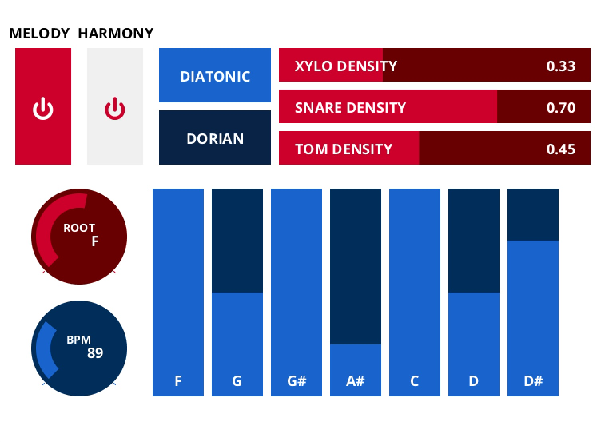
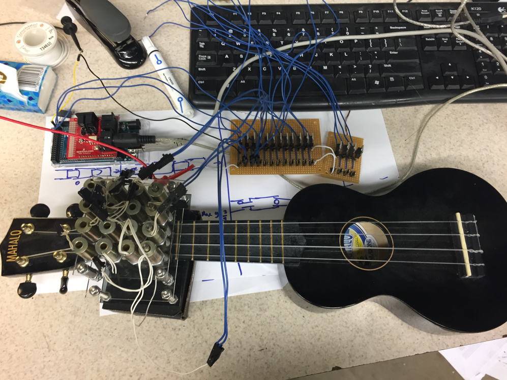
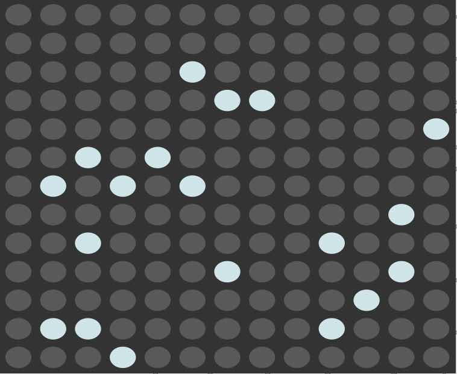
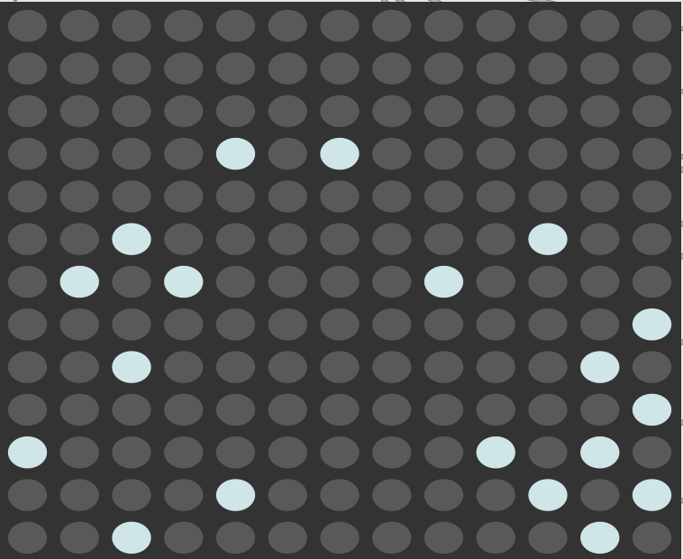
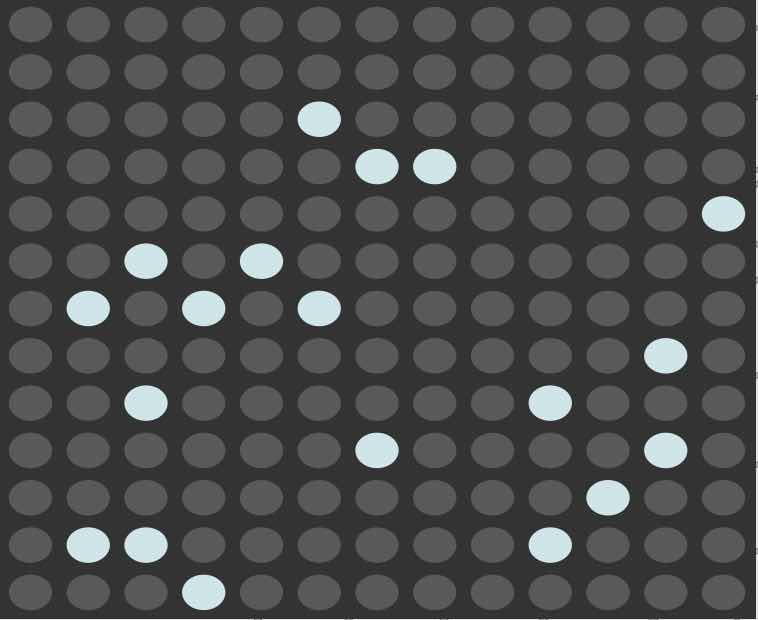
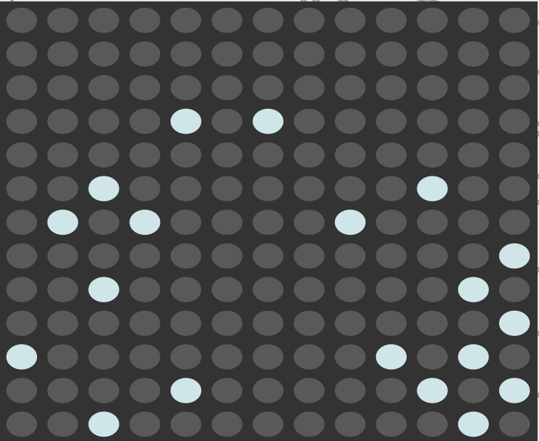

Creating with the Machine
Series of interactive algorithmic compositions for human and machine musicians
GitHub Links: machine-cycle, rnn-on-bach, breathe
"Creating with the Machine" is a set of compositions that combine algorithmic and traditional methods of music composition into live performances to explore how interactive generative algorithms can influence creativity in musical improvisation, and create a compelling listening experience for the audience. In each composition, data streams from a musician's performance are sent as input parameters to an algorithm to influence the music that is generated. As the algorithm is influenced by the performer, the performer is also musically influenced by the output of the algorithm in a real time closed loop. This project was awarded the Henry Armero Memorial Award, an award to honor the memory of Henry Armero, at the Meeting of the Minds research symposium. Sara also presented Creating with the Machine as a talk on algorithmic composition techniques at the 2019 Hackaday Superconference in Los Angeles.
Three compositions were created and premiered, each showcasing a different algorithmic composition technique. The first composition, "Machine Cycle," utilizes Markov chains to melodically alter and playback phrases from a keyboard player in real time. As a pianist improvises on a MIDI keyboard, the algorithm randomly saves phrases they play. When a new phrase is added, a Markov chain of potential embellishments (such as passing tones, neighbor tones, rhythmic alterations and skipped notes) is created and saved to a bank. Throughout the piece the algorithm generates its own phrases from its bank of Markov chains and plays them. The “conductor” of the piece controls the probabilities of embellishments occurring and how often phrases are played using a MIDI controller. Machine Cycle has a score that contains the structure outline of the piece without dictating specific notes. The conductor is also responsible for leading the musicians through the sections of the piece.
The second composition, "Recurrent Neural Networks on Bach," generates polyphonic phrases during the training of an LSTM neural network to accent a gradual transition from chaotic noise to tonal harmony. A 3 layer LSTM was trained on over 400 Bach chorales using Google Magenta, and a checkpoint of the model weights was saved every half hour during training. During performance, a Python script maintains a queue of MIDI files containing 4 voice 8 bar phrases that are generated from the ascending checkpoints. MIDI note messages are sent from Python to a virtual instrument in Logic Pro X. Using a MIDI controller, the performer controls movement through the checkpoints, tempo and other effects to shape the structure of the piece. The piece starts with random weights, and moves through the checkpoints to weights of the fully trained network.
Finally, the third composition, "Breathe," captures the breathing of a performing guitarist as they improvise to manipulate the frequency spectrum of their instrument and control granular synthesis. As the guitarist improvises they are able to record phrases with a foot pedal to run through a granular synthesizer. They can also use the foot pedal to capture an FFT snapshot of their current audio, freeze it, and play it back as a drone. Up to six drones can play, and they all continuously ramp to new amplitudes on a designated beat. Meanwhile, the breath of the performer is picked up by a lapel mic sitting under their noise. The amplitude of their breath signal influences the grain size and rate of the granular synthesizer, and the rate at which each drone ramps to a new amplitude.
RobOrchestra
MIDI Controllable Robotic Orchestra with an interface for generative music
GitHub Link: RobOrchestra
RobOrchestra is an ongoing project in the Carnegie Mellon Robotics Club that aims to explore the creative possibilities for robotic instruments. The RobOrchestra team designs, builds and programs robots that read music from MIDI data in order to put on musical performances. The orchestra, consisting of XyloBot, TomBot, SnareBot and UkuleleBot, has performed at several events across campus including Spring Carnival, Philharmonic Preview Parties, Computer Science Day, and the CMU 50th Anniversary Showcase.
Sara led the RobOrchestra project from 2015-2018, steering the project toward enabling the orchestra to "improvise" unique polyphonic music in real time based off of music generation algorithms, rather than just reading from static MIDI files. The first iteration of this algorithm generated chord progressions using a Markov chain. Xylobot would improvise a melody over the progression, usually sticking to chord tones with some probability of playing passing tones. SnareBot and TomBot would choose a rhythmic feature each measure from a bank. Code for this algorithm was written in Processing, which handled the scheduling of sending MIDI notes to each robot.
Future iterations of generative algorithms introduced a graphical interface, allowing users without any musical background to use the orchestra as a tool to create their own music. Through the GUI, users could control various parameters of the algorithm and test out various keys and modes. Control sliders included tempo, how densely each instrument played, and how often scale tones were played.
In addition to the generative music efforts, the team also focused on developing a new robot instrument named UkuleleBot. This robot was intended to be a rhythm section for the orchestra, strumming chords rather than playing individual notes. Chords are controlled by a fingering plate that sits above the neck of the Ukulele. Each “finger” is a solenoid that presses a pad into the string, and rebounds with a spring when the solenoid is turned off. The solenoids are controlled by an Arduino, which is programmed to interpret note-on MIDI messages into fingerings for 24 different chords.
Lets Go
Algorithmic step sequencer and melody generator based on a live game of Go
GitHub Link: lets-go
Let’s Go uses computer vision to track the positions of the black and white tokens in the popular board game Go. By representing a board state as a matrix, we can transform the Go board into a step sequencer and melody creator, allowing the two players to create music together that builds as the game progresses.
 

OpenCV was used to process a live video stream of the Go board captured with an HD webcam. The algorithm converts the picture to black and white to isolate the white go pieces, then inverts the frame to isolate the black.
We then use OpenCV’s blob detection algorithm to find the center of each game piece on the board. Assuming the game board does not move, we can interpolate the location of each intersection on the board given the location of the four edges of the board. From here, we can determine the closest intersection to each game piece and generate two 13x13 binary matrices representing the current game state. These matrices are sent to Max MSP using Open Sound Control(OSC).
Within the Max patch, the matrix of black pieces was used to control a step sequencer of percussion sounds. The matrix of white pieces was split in half, where the left half controlled 7 drone sounds and the right half controlled 6 melody lines.
The samples used for this project were created by Abby Adams and Julian Koreniowsky in Logic Pro X. The percussive sounds came from numerous drum patches designed by Logic ranging from kick drums to frog noises. The melodic pieces was based off of A Major suspended drone(ADEFA#C#E), synth bass noises and LFO sound effects. Melody lines play on a fixed loop starting on the next beat after the corresponding game piece was put down. The percussion sounds were based on a 3+3+2+2+3 rhythm, representing the 13 spaces of the game board.
Dynamic Reverb Simulation in AR
Effeciently simulate enviroment specific sound propagation for Microsoft HoloLens
GitHub Link: AR-Reverb
This HoloLens application simulates sound propogation in augmented reality in order to create realistic echo effects that take into acount the topology of the AR environment during reverb calculations. The size and shape of a room, as well as the presence of obstacles, can significantly influence sound, and taking these parameters into consideration can improve imersion in an augmented reality environment. Sound propogation is simulated using a parallelized ray tracing algorithm that approximates how sound bouces around a room by modeling the waves as rays. The result is reverberation effects that can be calculated in real time, and change dynamically each frame as the user moves around the room.
This project was a collaboration with Jonathan Merrin. To approach the problem, we divided the space into a custom data structure we called Quadrants, each responsible for keeping track of the spatial mapping data relevant to that section of the room and the rays that intersect it. When the HoloLens grabs more spatial mapping data, we asynchronously request the new information regarding the mesh and send it to the relevant Quadrant. That way, we keep most Quadrants free and ready to do work if they are needed.
When a new sound source is spawned, we use Unity’s Physics.Raycast to spawn 75 rays originating from the source and calculate where they collide with the walls. On every collision, we spawn a new sound ray reflecting off the object it collided with and dampen the associated volume. We allow this to continue up to a maximum recursion depth of 30 collisions.
Whenever a ray crosses through a Quadrant, we add it to the Quadrant’s list of active rays. On every frame, we check what Quadrant the user’s position is in and loop through its active rays to compute which rays come close enough to the user to be heard, eliminating the majority of the rays from the loop. When a sound has completed playing, all of its corresponding rays are destroyed. With our parallelized apparoach, we were able to raytrace a sound in 3ms, less than half the latency of our baseline sequential implementation that took 8ms. For more detailed on our algorithm and latency measurements, check out the project README on GitHub
Can your Smartphone Touch you Back?
Rendering gradient haptic textures on Android to aid non-visual navigation
IEE Publication: Perceiving texture gradients on an electrostatic friction display
This research project, under the supervision of Dr. Roberta Klatzky, explored the possibilities of incorporating haptic feedback into smartphone and tablet applications. Smartphone and tablet technology receive touch, but most devices don’t give tactile feedback. We worked with a device that utilizes haptic technology, the Senseg "Feelscreen" tablet, to investigate its use for virtual textures. The tablet gives the user haptic feedback by varying friction impulses depending on how the user's finger is moving. Our idea was that texture gradients could help people find their direction of movement without having to look at a screen.
We investigated human abilitity to discern texture gradients through a series of user research studies. Subjects swipe across a small area of the tablet to feel a gradient texture. Then they report whether the texture is increasing or decreasing in intensity as they swiped left to right. We developed an Android app to present the textures to the subjects and collect data.
Data was stored and managed using MySQL. We analyzed the data by calculating the discrimination between “increasing” and “decreasing” gradients for each texture. It was found that bumpy textures alongside gradients that started at a low amplitude were easiest to discern. Under these conditions we found discrimination values between 2.5 and 3, supporting the feasibility of using haptics to discern direction of movement.
After seeing positive results, we designed a keyboard application that uses various texture gradients across the keys to enable the user to find their direction of movement and easily "swipe type" on the keyboard without having to look at the screen. Our research was presented at the Meeting of the Minds research symposium in the Spring of 2016 and published in the IEEE World Haptics Conference in 2017.
Color Bursts
Generative sound installation in a botanical garden
GitHub Link: color-bursts
Color Bursts is a generative composition created by Sara Adkins and Julian Koreniowsky, inspired by the vibrant flowers scattered throughout a butterfly garden in Pittsburgh. The piece is made up of sample banks of percussive figures and melodic marimba phrases that randomly loop. Short synthesizer bloops flutter above the main loops, playing sparsely on randomly selected sub beats, while an evolving drone plays in the background. Samples for the piece were created using Logic Pro X.
Color Bursts ran as a sound installation in the Phipps Botanical Garden for four months in the summer of 2017. The piece runs as a Pure Data patch, which handles the scheduling and looping of the various voices. The patch runs on a Raspberry Pi, which launches the patch on startup and runs it indefinitely. The Pi was powered by a rechargeable battery that was plugged into a power source, ensuring the system would continue to run even if power was lost for several hours. The Pi was connected to a small but powerful external speaker using a USB audio device. The entire system was compact, and able to be hidden from view in the foliage of the garden.
Resume Parser and Classifier
Hackathon project for rating and grouping PDF resumes
GitHub Link: Resume-Parser
This hackathon project, developed at YHacks 2015, parses PDF resumes and sorts them by score in a Latex document with a summary of each participant for easy review of top candidates. Our algorithm parses a resume by splitting it into generic categories such as work experience, projects, leadership and activities, and assigning each candidate points based off of their performance in each category. This parser is unique, because it does more than simply give a general score for a candidate. It analyzes a resume to determine the best job category for the applicant, and then adjusts the applicants score based off of performance in parameters that are unique to each job category.